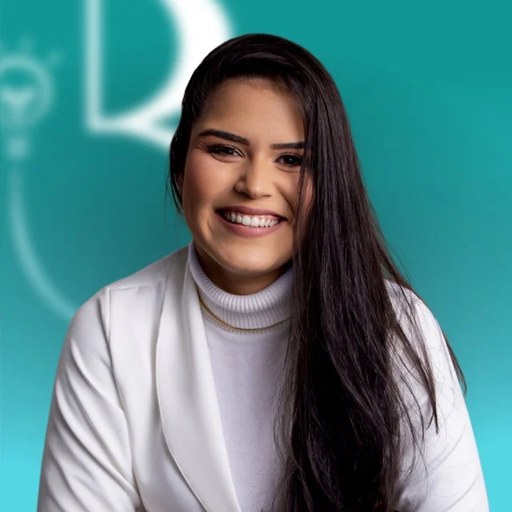
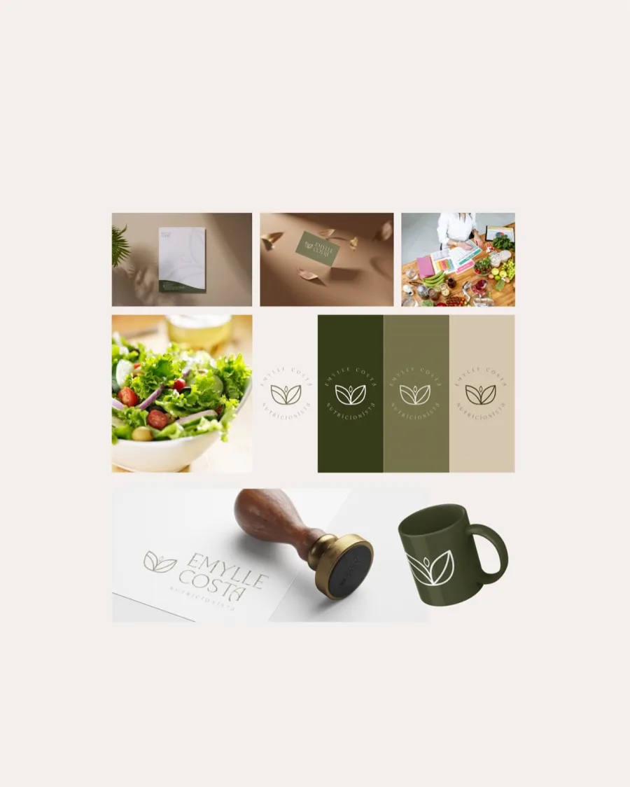
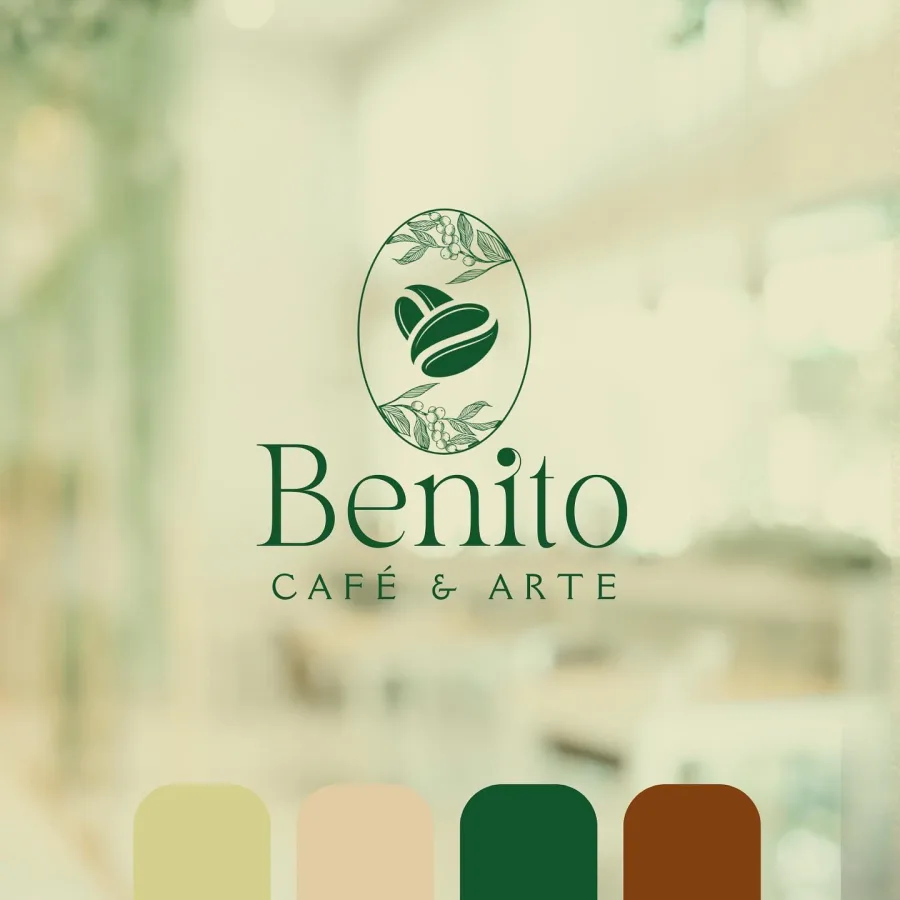
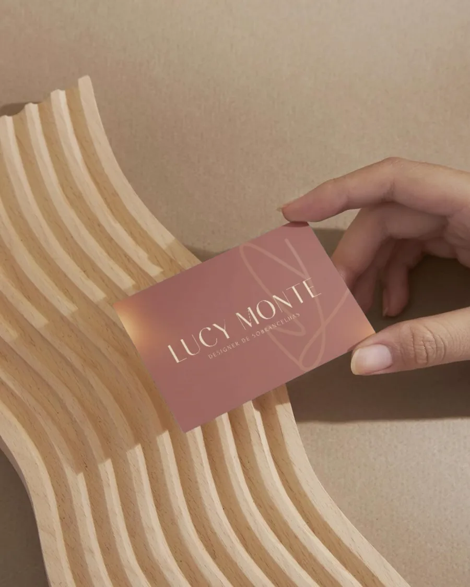
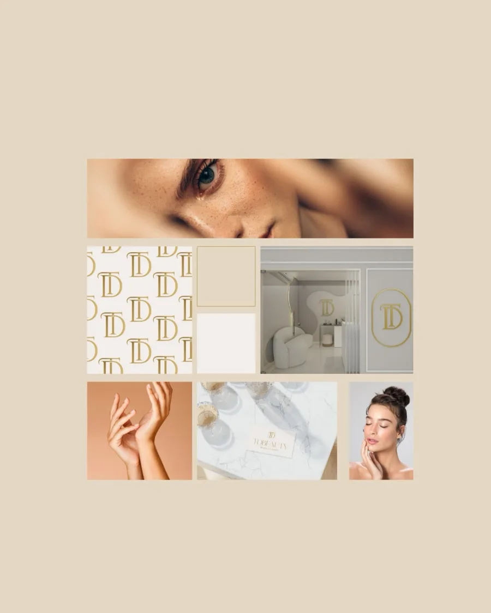
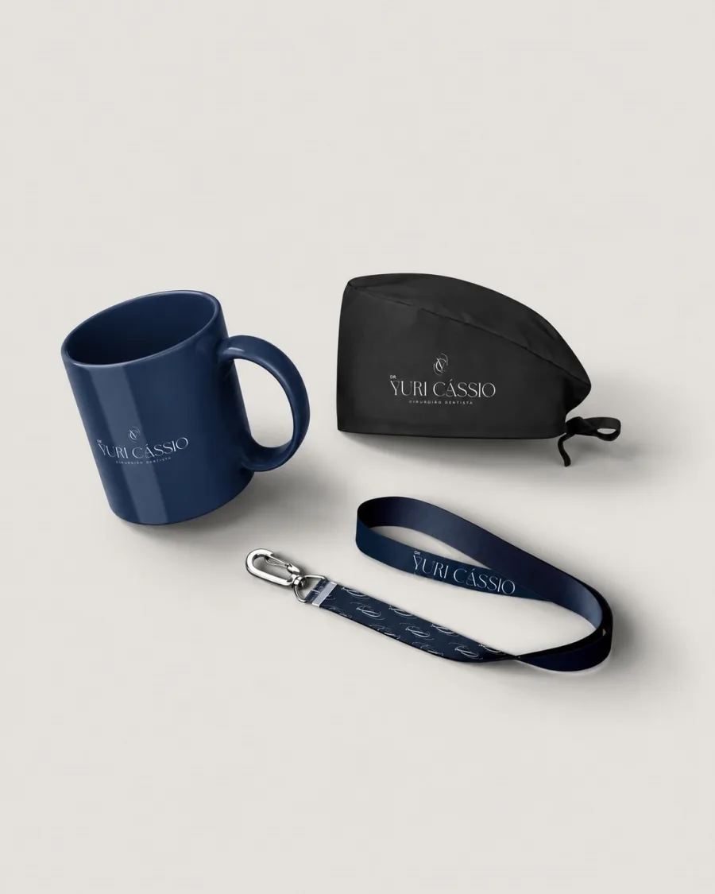
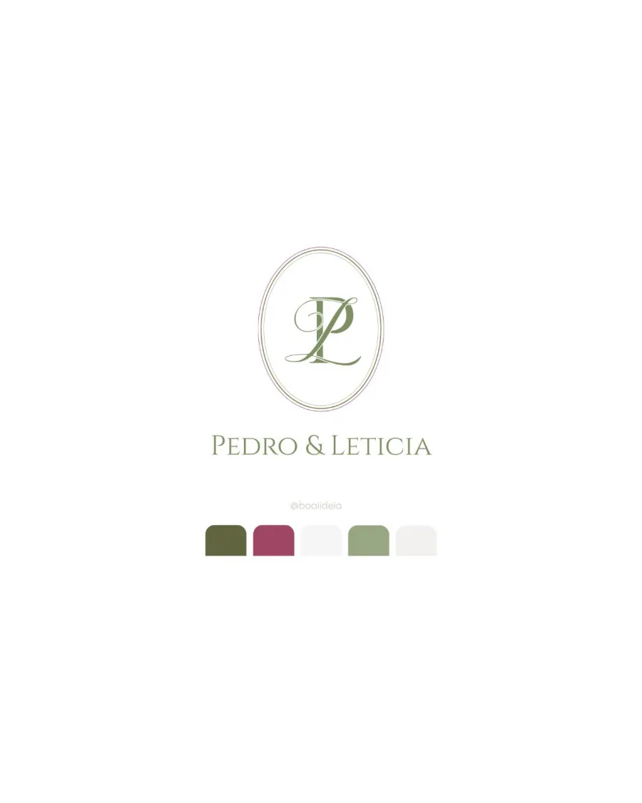
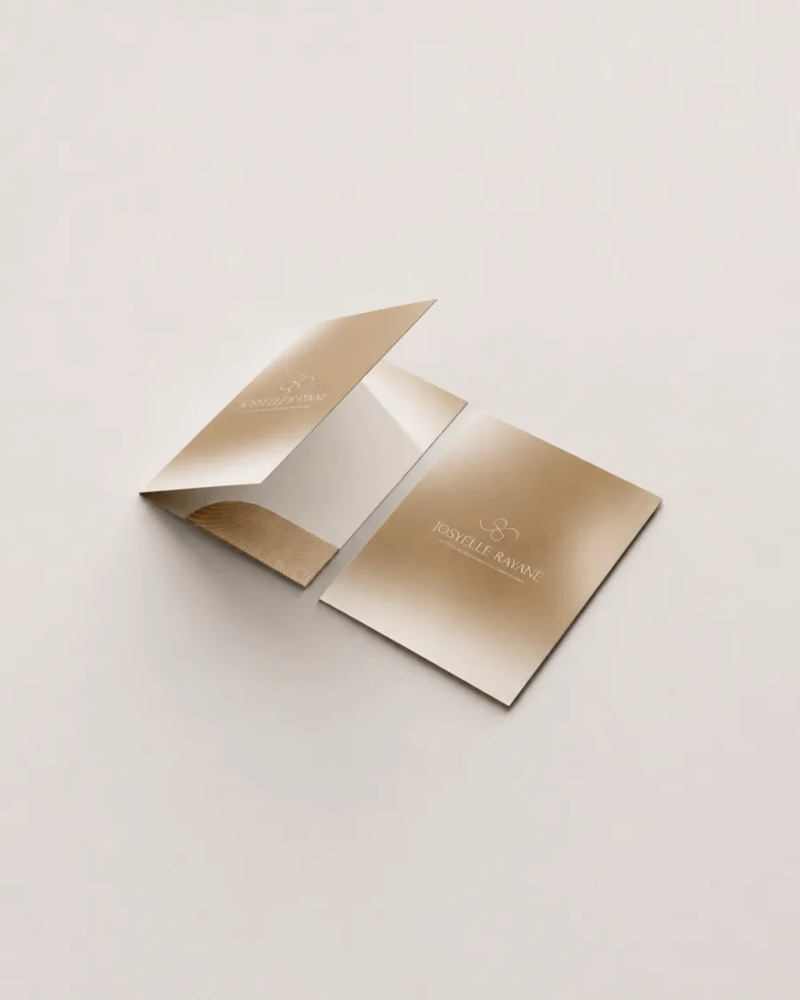

Branding
Marcas
Identidades visuais completas, logotipos, paleta cromática personalizada e papelaria institucional com conceito e harmonia duradoura.
Por Renatha Cavalcanti. Projetos que unem sensibilidade estética, harmonia cromática e narrativa visual para traduzir a essência de marcas e momentos inesquecíveis.

Projetos autorais desenvolvidos em diálogo constante com a essência de cada proposta.
Identidades visuais completas, logotipos, paleta cromática personalizada e papelaria institucional com conceito e harmonia duradoura.
Monogramas entrelaçados, identidade visual completa para a cerimônia, papelaria fina e lembranças que eternizam a união com requinte.
Composições visuais afetuosas e delicadas para celebrações de nascimento, anúncios, enxoval e registros de boas-vindas com sensibilidade.
Design temático sob medida para aniversários, batizados e datas marcantes, traduzindo sentimentos em peças de alta nobreza.
Composições digitais consistentes, sofisticadas e rigorosamente alinhadas à narrativa visual e ao posicionamento de alto padrão da sua marca no Instagram.
Cada trabalho nasce de uma pesquisa aprofundada para valorizar a sua marca e despertar admiração imediata.

Identidade visual pautada na nutrição integrativa e no acolhimento. A composição visual une tons botânicos terrosos, tipografia refinada e uma presença sofisticada em cada aplicação de papelaria e embalagem.

Tipografia clássica com ilustração botânica manual, celebrando o café de origem e a atmosfera acolhedora de bistrô contemporâneo.

Cartão de apresentação com textura especial e hot stamping dourado, transmitindo exclusividade, calor humano e acabamento tátil sublime.

Monograma dourado harmonizado a uma paleta neutra e luminosa, desenvolvida para evidenciar autoridade e sofisticação no mercado de estética.

Identidade clínica com equilíbrio impecável entre seriedade técnica e acolhimento humano em aplicações de recepção, papelaria e brindes.

Monograma matrimonial entrelaçado com curvas clássicas, paleta botânica e papelaria fina que eterniza os votos da união.

Pasta corporativa com laminação especial e acabamento em hot stamping dourado, desenvolvida para causar impressão indelével em reuniões de negócios.
Um processo estruturado em etapas claras para garantir exclusividade, precisão estética e tranquilidade do início à entrega.
Mergulho profundo nos valores, no público e no posicionamento da sua marca para mapear o território visual e a essência do projeto.
Criação do universo gráfico: pesquisa tipográfica minuciosa, arquitetura de símbolo, monograma e definição da paleta cromática exclusiva.
Apresentação completa do projeto contextualizado em cenários reais: papelaria, embalagens, uniformes e ambientes digitais de alto impacto.
Envio de todos os arquivos organizados para impressão e uso digital (AI, PDF, SVG, PNG), acompanhados do Guia de Uso da Marca.
"Identidades inspiradas na beleza da criação."
Com sensibilidade artística e escuta atenta, Renatha transforma ideias e propósitos em universos visuais autênticos. Cada projeto é elaborado com foco no equilíbrio harmônico, tipografia minuciosa e elegância atemporal que resiste às modas passageiras.
Tire suas principais dúvidas sobre o processo, entregas e contratação de identidade visual.
Você recebe um pacote completo pronto para uso imediato em todas as mídias: arquivos vetoriais para impressão e gráfica (AI, PDF e EPS), arquivos em alta resolução com fundo transparente para uso digital (PNG e SVG), além do Guia de Uso da Marca detalhando tipografias e paleta de cores.
O prazo médio varia entre 15 e 25 dias úteis a partir do alinhamento do briefing. Esse tempo é fundamental para o desenvolvimento da pesquisa estética, conceituação e refinamento das aplicações reais.
Apresentamos o conceito completo aplicado em situações reais para que você veja a identidade em ação. Caso sejam necessários ajustes pontuais de cor ou proporção, realizamos as rodadas de refinamento antes da entrega final dos arquivos.
Atendemos clientes em todo o território nacional e no exterior. Todo o processo de briefing, reuniões de alinhamento e apresentação é conduzido de forma digital e dinâmica, com acompanhamento direto pelo WhatsApp.
Basta clicar no botão de WhatsApp para iniciar uma conversa diretamente com Renatha. Conversamos sobre seu objetivo, enviamos uma proposta detalhada e, após a confirmação, agendamos sua data no cronograma oficial.
Consulte nossos horários de funcionamento e escolha como prefere falar conosco.